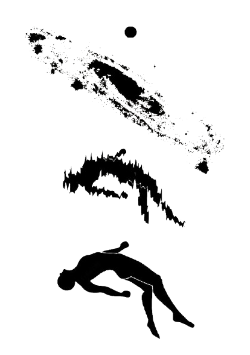

Plato believed that the physical world is only a shadow of a higher, perfect reality. True knowledge comes from understanding these deeper forms.
Descartes doubted everything that could possibly be doubted. He concluded that the one undeniable truth is that he exists as a thinking being.
Kant argued that we never experience reality “as it is.” Instead, our minds shape our experience of the world.
Modern science, artificial intelligence, and virtual reality all trace back to these fundamental questions about perception and truth.
Prisoners chained in a cave see only shadows on the wall, mistaking them for reality. The philosopher escapes to see the true forms illuminated by the sun.
"Cogito, ergo sum" (I think, therefore I am). Even if an evil demon deceives me, I must exist to be deceived.
We experience "phenomena" (things as they appear, shaped by mind's categories like space/time) but never "noumena" (things-in-themselves).